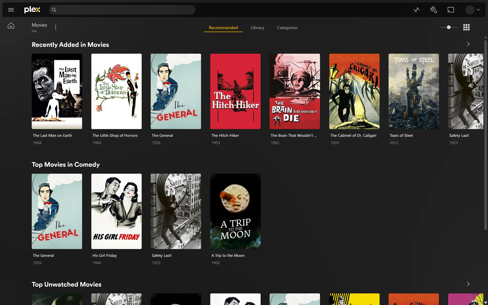
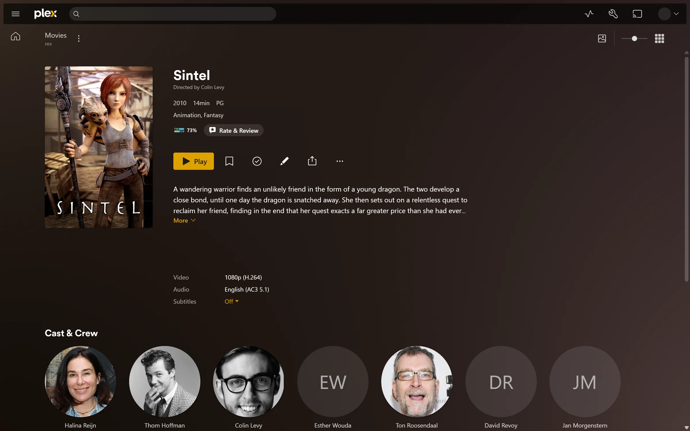
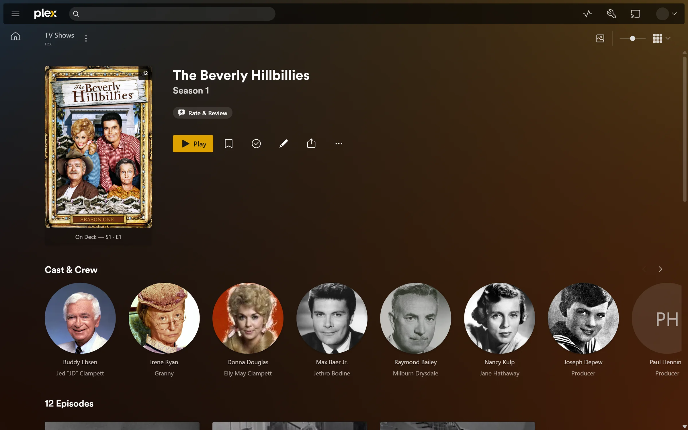
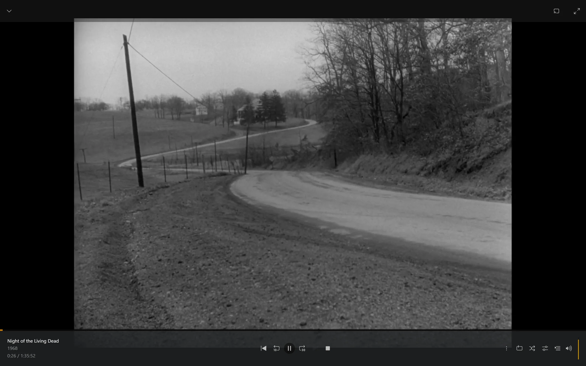

Plex compatible · Owns no files · Free and open source
Your debrid and Usenet library
in your Plex apps.
Your movies and shows stay with your debrid service or Usenet provider. rex presents that library to Plex clients (official or compatible) as a normal server with posters and seasons and your watch history.
No scanning A new release shows up in your library the moment its source sends rex its details. rex never reads a file to find out what it is.
How fast it feels on a real library →rex is free for everyone and open source under the MIT license. Every build is out the day it is made.
01 / What it does
The apps you know.
The library you already have.
It looks like any other server.
Once you add it to your account it shows up in the apps next to your other servers. Movies and shows get posters and summaries and cast and seasons. Watched state and Continue Watching and playlists and collections and edits and Fix Match all work and survive a restart. Each file starts on the audio and subtitle languages your Plex account asks for. Search Subtitles checks the subtitle you pick against a text subtitle in the file or against its sound when FFmpeg is set up. It fixes the timing when it is off. Movie editions and the full server Dashboard also work with a free claiming account.
Apps on your home network also find it on their own through Plex's LAN discovery. That is on by default when it uses port 32400.
Many sources. One library.
Each source sends rex the files it has and keeps it up to date. zurg does this for you today and anything that can run ffprobe can do it too. A debrid account and a Usenet account each behind its own zurg end up in one Movies and one TV library.
The same film from two sources becomes one title with two versions once both are matched.
It streams straight from the source.
When you press play rex reads the file from where it lives and hands it on. Nothing is downloaded first. Files play in their original quality. Signed in as the account that owns rex you can delete a title in the app and it is deleted at its source too.
Install jellyfin-ffmpeg and rex finds it and also converts what a device cannot play. With a graphics chip a converted 1080p film starts in about 2 seconds even on a small Intel box.
02 / Screens
What you see
in the apps.
Real screenshots of rex in the official web app. The library is public domain films and open movies streamed from a plain web server. Nothing is touched up.




03 / Speed
How it feels
on a real library.
Measured in October 2026 on a laptop with an eight core processor. The library was a real one with 4062 movies and 656 shows holding 34678 episodes. Each figure is the middle of seven runs of the official web app in Chrome on the same machine with a fresh browser every run. Your own times depend on your machine and your connection. rex used about 730 MB of memory during the run and under 500 MB while it started.
04 / Limits
The things it will not do.
Movies and TV only.
Music and photo libraries stay empty. There is no Live TV and no DVR.
A server is not a subscription.
Plex Web plays away from home with free claiming and viewing accounts. Other apps have not been tested away from home on free accounts. Converting video needs no pass.
Offline downloads lose text subtitles.
A file that plays as it is keeps its subtitles. When rex converts an MKV or MP4 the subtitle you picked comes along. The Plex apps for Android and iOS get a text subtitle as a track and every other app gets it drawn into the picture. Lines too dense to read in time such as an opening song's karaoke can be left out the first time. A subtitle you uploaded comes along too. A download for offline viewing still leaves text subtitles out.
It needs a source that probes.
Sources send container and stream details before a title appears. zurg does this and a big library takes a few hours the first time. Optional FFmpeg analysis reads source media and stores generated images locally. Downloads also use local storage.
Outside your home needs your own address.
The web app only connects over HTTPS even at home and rex has no relay. rex-direct gives it one with a single port forward. One Plex account can hold up to ten rex-direct names. Or give it a certificate for a hostname you own. Without a public IP at home use Tailscale or a small VPS that forwards to rex. Skip tunnels that cap bandwidth and keep a Cloudflare tunnel out of the way because it makes every play start read the whole file.
05 / Access
Free for everyone.
Open source.
rex and its source code are public under the MIT license. There is no paid tier and no waiting period. Every build is public the day it is made.
rex works with any source. rex-stremio brings your Stremio addons and is free. The guide shows how.
06 / Setup
Up and running.
- Download the newest build for your machine and unpack it. Linux needs glibc 2.35 or newer.
- Start rex. It makes an empty movie and TV library.
- Claim it on a fresh free Plex account with a code from plex.tv/claim and share it with your own account. At your own risk.
- Point a source at rex. For a debrid account that is zurg. Add rex's LAN IP to its config and restart it. Your own app or an addon registers itself the same way.
- Forward port 32400 to rex to use its own HTTPS address. The web app needs it even at home.
- Coming from another Plex server? Bring your watch history with what you watched and rated and where you stopped.
The guide has every step plus Tailscale and a VPS. It needs rex nightly 2026.10.25 or newer and zurg nightly 2026.10.27 or newer. A proxy on the rex machine must block /rex/.